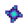

Iridium Ore
| Iridium Ore | |
|  | |
| An exotic ore with many curious properties. Can be smelted into bars. | |
| Information | |
| Source | Mining • Statue Of Perfection • Fishing Treasure Chests • Magma Geode • Omni Geode • Super Cucumber Fish Pond • Panning • Traveling Cart |
| Sell Price | |
Iridium Ore is a resource that can be obtained in a variety of locations (see "Locations" below).
Locations
- Mining Iridium Nodes and Mystic Stones.
- Iridium Nodes can be found in the Skull Cavern and Volcano Dungeon. They can also spawn on Hill-top and Four Corners farm maps at Mining Skill level 10.
Tips: The chance to find Iridium Ore increases steadily the further one descends into the Skull Cavern. Large amounts of staircases or bombs can get one deep into Skull Cavern quickly. - Mystic Stones can be found in the Mines (Floor 100+), Quarry, Skull Cavern and Volcano Dungeon.
- Iridium Nodes can be found in the Skull Cavern and Volcano Dungeon. They can also spawn on Hill-top and Four Corners farm maps at Mining Skill level 10.
- Opening Magma Geodes, Omni Geodes and Golden Coconuts.
- To further enhance geode frequency, choose the Geologist Profession at mining level 5 and the Excavator Profession at mining level 10.
- Krobus sells 1 Omni Geode every Tuesday for
 300g each and the Oasis sells 3 Omni Geodes every Wednesday for 1,000g each.
300g each and the Oasis sells 3 Omni Geodes every Wednesday for 1,000g each. - The Oasis sells 10 Coconuts every Monday for 400g each, which can then be traded with the Island Trader for 1 Golden Coconut after having cracked at least one Golden Coconut.
- It is a rare drop from high level Monsters.
- Purple slimes in the Skull Cavern have a chance to drop both iridium ore and iridium bars. They can be raised in Slime Hutches.
- Iridium Bats in the Skull Cavern may drop an Iridium Bar (0.8% chance) and up to 4 Iridium Ore when slain.
- Iridium Crabs in the Skull Cavern may drop up to 3 Iridium Ore when slain.
- Iridium Golems may drop Iridium Ore when slain (20% chance).
- The Traveling Cart will occasionally sell it for 300–1,000g.
- A Super Cucumber Fish Pond may produce 1-3 Iridium Ore when the population of the pond reaches 9.
- A fallen meteorite on the Farm will drop 6 Iridium Ore.
- Iridium Ore can be found in Fishing Treasure Chests.
- Panning may also occasionally yield Iridium Ore.
- The Statue Of Perfection, which can be obtained after getting four candles during Grandpa's Evaluation, gives the player 2-8 Iridium Ore per day.
Smelting
Iridium Ore can be smelted in a Furnace to create an Iridium Bar. The smelting requires 5 iridium ore and 1 Coal and takes 8 in-game hours.
Crafting
| Image | Name | Description | Ingredients | Recipe Source |
|---|---|---|---|---|
| Deluxe Scarecrow | Prevents crows from attacking your crops. Has a large radius (about 16 "tiles"). | Mail, after collecting all 8 Rarecrows | ||
| Warp Totem: Desert | Warp directly to Calico Desert. Consumed on use. | Desert Trader for |
Gifting
| Villager Reactions
| |
|---|---|
| Neutral | |
| Dislike | |
| Hate | |
Bundles
One Iridium Ore is used in the  Engineer's Bundle in the Boiler Room (Remixed).
Engineer's Bundle in the Boiler Room (Remixed).
Tailoring
Iridium Ore can be used in the spool of the Sewing Machine to create the  Iridium Energy Shirt. It can be used in dyeing, serving as a purple dye at the dye pots located in Emily's and Haley's house, 2 Willow Lane. It can also be used as an iridium dye when used in the spool of the Sewing Machine with a dyeable clothing item in the feed.
Iridium Energy Shirt. It can be used in dyeing, serving as a purple dye at the dye pots located in Emily's and Haley's house, 2 Willow Lane. It can also be used as an iridium dye when used in the spool of the Sewing Machine with a dyeable clothing item in the feed.
Quests
This page or section contains unmarked spoilers from update 1.6 of Stardew Valley. Players may want to avoid or be cautious toward reading this article/section. |
- One Iridium Ore may be requested by Rainbow Trout, Spook Fish, Super Cucumber, or Void Salmon in a Fish Pond quest to increase the capacity of the pond from 7 to 10.
- Marlon may request the player to obtain 15 Iridium Ore in the "Treasure Hunt" quest during the Desert Festival.
Trading
Five Iridium Ore can be traded to the Desert Trader for one Mega Bomb.
Notes
When used with Slingshots, Iridium Ore deals more damage to monsters than any other ammunition.
History
- 1.4: Added use in Crafting, Tailoring, and Fish Pond quests. Adjusted Iridium Node spawn chance after floor 100 in the Skull Cavern. Can be produced by Fish Ponds.
- 1.6: Can now be obtained from Iridium Golems. Added Desert Festival quest.
- 1.6.4: Drop chance from Iridium Golems increased from 10% to 20%.
| Resources | |
|---|---|
| Basic | Battery Pack • Bone Fragment • Cinder Shard • Clay • Coal • Fiber • Hardwood • Moss • Stone • Wood |
| Ore | Copper Ore • Iron Ore • Gold Ore • Iridium Ore • Radioactive Ore |
| Bars | Copper Bar • Iron Bar • Gold Bar • Iridium Bar • Radioactive Bar • Refined Quartz |